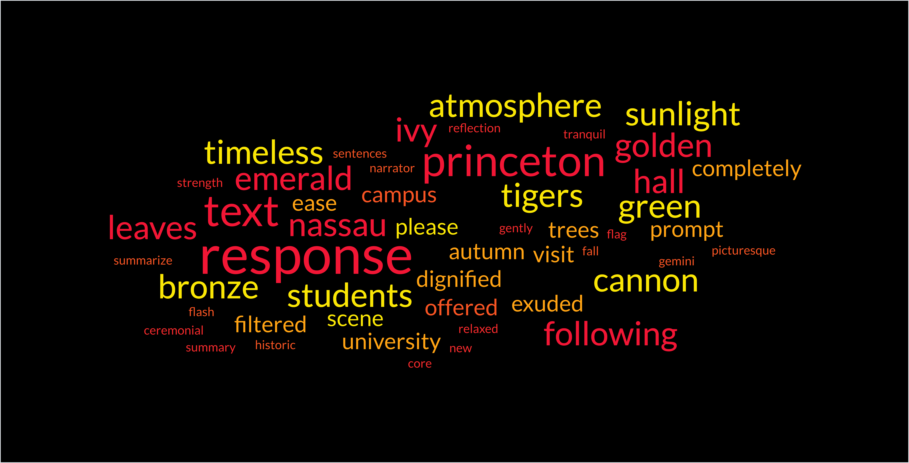

I recently fed one of my Princeton tour reflections into a small chain of language models, partly out of curiosity and partly out of mischief. What happens if the same paragraph gets summarized, expanded, and re-summarized by different AIs in multiple rounds? Will the meaning stay intact, or will it quietly drift into something I never said? Would it make up the names that I never mentioned in my decription? It’s essentially the old “telephone game,” just played by neural networks instead of children at a birthday party.
This experiment was run with Claude 3.7, Gemini 2.5-flash, and GPT-4o. The results are for educational and analytical purposes only and do not express my views about Princeton or any other institution.

Experiment
The writing paragraph for test from my travel blog : My first stop was Nassau Hall. I walked slowly along the old stone walls, leaves crunching under my shoes. It’s fall now, and the trees have turned a deep golden hue. Everything felt calm, almost ceremonial. Emerald ivy clung to the walls as if it had been growing there for centuries, maybe that’s why we call princeton as one of ivy league😉? The bronze tigers lay quietly by the entrance, and the American flag waved gently above the doorway. There was a sense of quiet, timeless strength in the air. At Cannon Green, a gentle breeze drifted by, and sunlight filtered softly through the gaps between the leaves. A few students were eating sandwiches, some half-talking, half-dozing in the warmth. I didn’t know anyone, but I felt completely at ease, immersed and relaxed.
All the prompts were ran in a new conversation
Prompt 1
To Gemini 2.5-flash: Please summarize the following text in 3–4 sentences.
Response:
The narrator visited Nassau Hall at Princeton during the fall, where golden leaves and emerald ivy created a picturesque scene. The historic building, with its quiet bronze tigers and gently waving flag, exuded a calm, almost ceremonial, and timeless strength. On Cannon Green, sunlight filtered through the trees as students relaxed, and the narrator, despite being alone, felt completely at ease, immersed, and relaxed in the tranquil atmosphere.
Prompt 2
To Claude 3.7: Please expand the following summary into a 120–180 word reflection. Add clarity, transitions, and nuance, but do not invent new facts. Maintain a natural narrative flow and preserve the core meaning. Here is the summary: (same as before response)
Response:
A Fall Afternoon at Princeton
During my autumn visit to Princeton University, Nassau Hall stood as a majestic centerpiece amid nature’s seasonal transformation. Golden leaves carpeted the grounds while emerald ivy clung to the historic building’s weathered façade, creating a scene worthy of a postcard. The bronze tigers guarding the entrance remained in silent vigil, their stoic presence adding to the hall’s dignified atmosphere. Above, the American flag gently undulated in the breeze, its rhythmic movement emphasizing rather than disturbing the prevailing tranquility.
As I wandered to Cannon Green, dappled sunlight filtered through the canopy of trees, casting intricate patterns across the lawn where students lounged and studied. Though I was there as a solitary visitor, I experienced no sense of isolation or awkwardness. Instead, I found myself completely at ease, absorbed in the peaceful ambiance that seemed to transcend time. The campus exuded a ceremonial quietude—a timeless strength that invited contemplation and offered a respite from the hurried pace of everyday life.
Prompt 3
To Gemini 2.5-flash: Please summarize the following expanded text into a concise 3–4 sentence paragraph. Focus on the main ideas, keep the tone neutral. Here is the text: (same as before response)
Response:
During an autumn visit to Princeton University, Nassau Hall stood majestically, adorned with golden leaves and emerald ivy, guarded by bronze tigers, creating a picturesque and dignified scene. Nearby, Cannon Green offered a serene setting where dappled sunlight illuminated students studying and relaxing. The campus exuded a peaceful, timeless atmosphere that invited contemplation, making the visitor feel completely at ease and providing a respite from the hurried pace of everyday life.
Prompt 4
To GPT-4o: Based on the following summarized text, reinterpret its core message. You may reorganize the emphasis, but keep factual meaning intact. Write in 3–5 sentences, and avoid adding new information. Here is the text: (same as before response) During an autumn visit to Princeton University, Nassau Hall presented a majestic sight, with golden leaves, emerald ivy, and bronze tigers enhancing its dignified appearance. Nearby, Cannon Green served as a tranquil spot, where sunlight filtered through the trees, warming students who were engrossed in their studies or simply relaxing. Overall, the campus offered a serene and timeless atmosphere, encouraging reflection and providing a soothing escape from life’s usual rush.
Response:
During an autumn visit to Princeton University, Nassau Hall presented a majestic sight, with golden leaves, emerald ivy, and bronze tigers enhancing its dignified appearance. Nearby, Cannon Green served as a tranquil spot, where sunlight filtered through the trees, warming students who were engrossed in their studies or simply relaxing. Overall, the campus offered a serene and timeless atmosphere, encouraging reflection and providing a soothing escape from life’s usual rush.

Takeaway
Somewhere along the AI relay race, my crunchy leaves, drowsy sandwich-eaters, and politely reclining bronze tigers vanished, and they were, unfortunatly, replaced by lofty words about “reflection” and “escape.” The personal texture quietly dissolved, and the final version sounded less like me walking around Princeton and more like Princeton writing its own brochure. This may be because personal travel notes are far less common in its training data than polished institutional language, so when the models rewrite each other, the messy, specific, human bits are the first to disappear. In other words, the more the models rewrote each other, the more the lived moment was smoothed out into something “elegant” but less authentically mine.
So somewhere along the chain, my crunchy leaves and sleepy students vanished and honestly, I might be next.